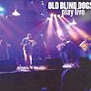

Celtic Lyrics Corner
>
Artists & Groups
>
Old Blind Dogs
> Play Live

Play Live
(2005)
Tracks
:
1.
The Battle Of Harlaw
2. Sky City
3.
The Wisest Fool
4. Cuilfhionn/The Rejected Suitor
5.
Kincardine Lads
6. Breton/Galician
7.
Young Edward
8. Soup Of The Day
9.
Tramps And Hawkers
10.
The Battle Of Waterloo
11. Lochanside
12.
A Man's A Man For A' That
13. A Wild Rumpus